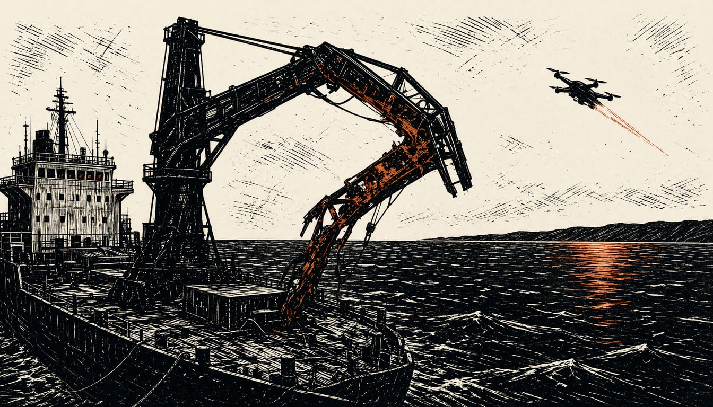

Drone hits cargo ship near Romania, crane damaged, no one hurt
The MV Larissa 1 is at least the tenth merchant ship struck near NATO coasts since early October. Romania's defence minister says an investigation is under way.

A drone hit the cargo ship MV Larissa 1 in Romanian waters off Sfântu Gheorghe on Friday night, on its way to the port of Sulina. The strike damaged the ship's cargo crane, and no fire broke out. Romanian Defence Minister Ștefan-Radu Oprea said no one was hurt and that an investigation is under way. He spoke at the Military Port of Constanța on Saturday.
The attack is part of a wider toll. The Kyiv Post counted more than 300 attacks in the Black Sea in 2026. The attacks killed over 30 seafarers and left more than 20 missing. On 23 October, drones hit a merchant ship 13 nautical miles from Constanța. One sailor died and three were missing. The Larissa 1 was at least the tenth merchant ship struck near NATO coasts since early October.
The Larissa 1 sails under the flag of Palau. Its owner, AKN SHIPPING LTD, is registered in Liberia but based in Turkey, according to Starboard Maritime Intelligence data. Starboard's data shows the ship was sailing from Bizerte in Tunisia to Sulina, then Ukraine. Its distress message came in at 21:40 local time on Friday, Antena 3 CNN reported on 14 November. Reports put the strike about 7 nautical miles north-east of Sfântu Gheorghe.
NATO and the European Union have both announced new measures for the Black Sea. NATO spokesperson Allison Hart said the alliance will strengthen its group of maritime patrol aircraft and drones in the region. European Commission President Ursula von der Leyen announced €50 million in funding on 9 November, four days before the strike. The money backs fast-tracked work on the Black Sea Maritime Security Hub.
Civilian ships cannot defend themselves from drones, military analyst David Sharp told The Insider. They are slow, and they make a defenceless target. In Romanian or Bulgarian waters, protecting shipping would mean covering the vessels and even responding to aggression, he said. In international waters it would amount to taking part in hostilities, which NATO avoids. Sharp said the alliance has the technical means to fight both simple and advanced sea drones. No political decision has come, because members fear escalation with Russia.